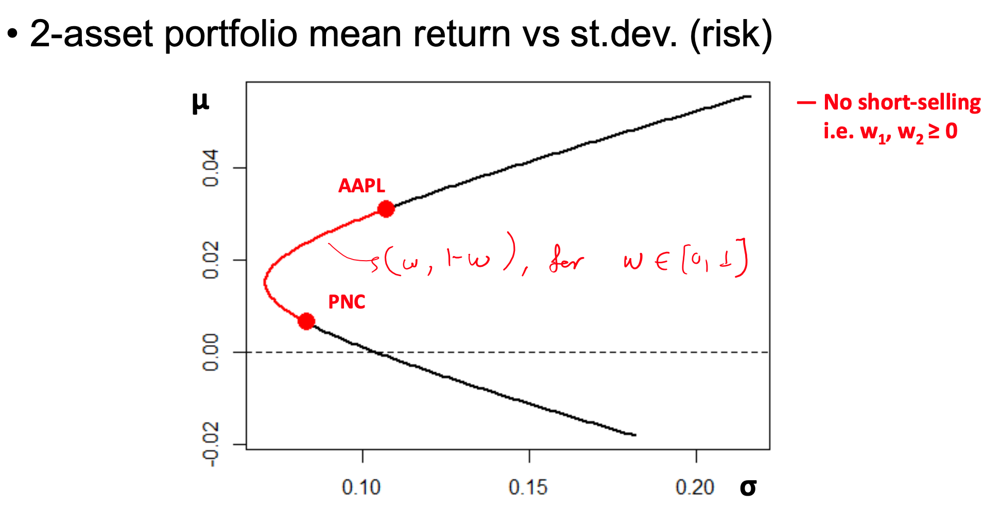
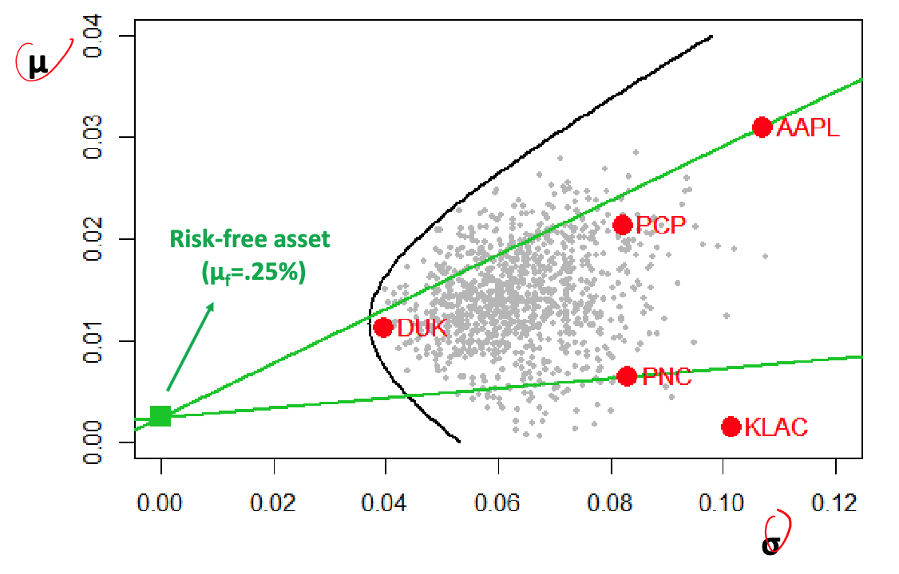
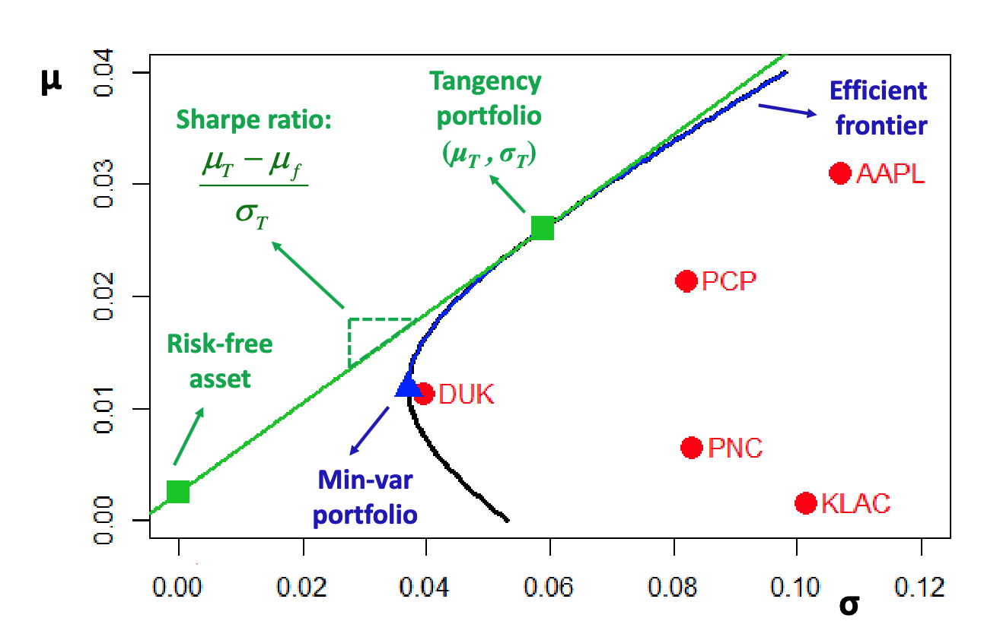
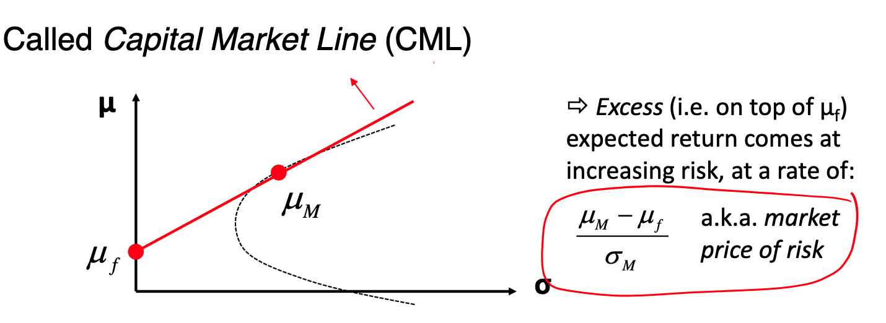
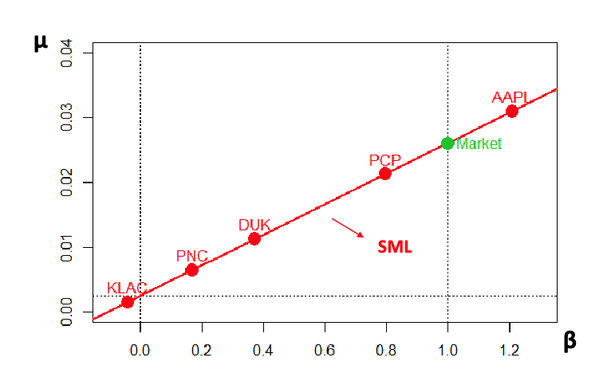
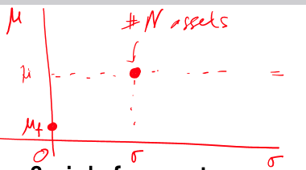

Chapter 7 Portfolio Theory
Portfolio theory deals with how an asset manager can form a portfolio that optimizes their goals, whether that be lowest risk, highest return, or some other measure of performance.
How to pick stocks is a complicated science and there are many ways to go about it.
7.1 Assumptions
We first make some assumptions when dealing with the theory. - Static multivariate return distribution determined by assets’ mean and covariance. - This implies a normal or elliptical distribution for returns - The investors have the same views on mean and variance - Investors also want minimum risk for maximum return - Investors measure risk by portfolio’s variance - No borrowing or short-selling restrictions - No transaction costs
7.2 Dealing with Two Assets
We’ll start with a simple example with two risky assets, \(S_{1}, S_{2}\)
We assume that net returns (as time \(0\to t\) ) satisfy: \[ \left[\begin{array}{c} R_{1} \\ R_{2} \end{array}\right] \sim N \left( \left[ \begin{array}{c} \mu_{1} \\ \mu_{2} \end{array} \right], \left[ \begin{array}{cc} \sigma_{1}^{2} & \sigma_{12} \\ \sigma_{21} & \sigma^{2}_{2} \end{array} \right] \right) \quad \text{where } R_{i} = \frac{S_{i}(t)-S_{i}(0)}{S_{i}(0)}, i = 1,2 \]
We can form a portfolio with \(x_{i}\) units of asset \(S_{i}\), which gives us the following equation: \[ \begin{aligned} V(t=0) &= x_{1}\cdot S_{1}(0)+x_{2}\cdot S_{2}(0)\\ \end{aligned} \] We can derive the initial weights of each asset that we’ve invested into using: \[ w_{i} = \frac{x_{i}S_{i}(0)}{V(0)} \]
7.2.1 Portfolio Return
We can calculate the return of this two asset portfolio and show that: \(R_{p} = w_{1}R_{1}+w_{2}R_{2}\) \[ \begin{aligned} R_{p} &= \frac{V(t)-V(0)}{V(0)} = \frac{[x_{1}S_{1}(t)+x_{2}S_{2}(t)]-[x_{1}S_{1}(0)+x_{2}S_{2}(0)]}{V(0)}\\ &= \frac{x_{1}[S_{1}(t)-S_{1}(0)]+x_{2}[S_{2}(t)-S_{2}(0)]}{V(0)}\\ &= x_{1} \underset{ \text{Introduce }S_{1}(0) \text{ to get} R_{1}}{ \frac{S_{1}(t)-S_{1}(0)}{S_{1}(0)} \frac{S_{1}(0)}{V(0)} } + x_{2} \underset{ \text{Introduce }S_{2}(0) \text{ to get} R_{2} }{ \frac{S_{2}(t)-S_{2}(0)}{S_{2}(0)} \frac{S_{2}(0)}{V(0)} }\\ &= R_{1} \underbrace{ x_{1}\frac{S_{1}(0)}{V(0)} }_{ w_{1} }+R_{2} x_{2}\underbrace{ \frac{S_{2}(0)}{V(0)} }_{ w_{2} }\\ &= R_{1}w_{1}+R_{2}w_{2} \end{aligned} \] Which shows that the net returns of a portfolio is exactly the weight combination of the net returns of the assets within.
We can also find the distribution of the portfolio returns (which may not surprise you, is just the linear combination of the individual assets returns)
\[ \begin{aligned} R_{p} &= \underline{w}^{T}\underline{R} = [ w_{1} \ w_{2}] \left[ \begin{array}{c} R_{1} \\ R_{2} \end{array} \right] \quad \text{ where } \underline{R} \sim N_{2D}\left( \left[ \begin{array} {l} \mu_{1} \\ \mu_{2} \end{array} \right], \left[ \begin{array}{cc} \sigma_{1}^{2} & \sigma_{12} \\ \sigma_{21} & \sigma_{2}^{2} \end{array}\right] \right)\\ &\implies R_{p} \sim N_{1D}(\mu_{p},\sigma_{p}) \ \text{ where}\\ \end{aligned} \]
\[ \begin{aligned} \mu_{p} &= \mathbb{E}(R_{p}) = \mathbb{\mathbf{E}}[\underline{w}^{T}\underline{R}]\\ &= \underline{w}^{T}\mathbb{E}[\underline{R}] = \underline{w}^{T}\underline{\mu}\\ &= \sum_{i}w_{i}\mu_{i}\\ \\ \sigma_{p}^{2} &= \mathbb{V}[R_{p}] = \mathbb{V}[\underline{w}^{T}\underline{R}]\\ &= \underline{w}^{T} \mathbb{V}(\underline{R})\underline{w} = \underline{w}^{T}\Sigma \underline{w}\\ &= [ w_{1} \ w_{2}] \left[ \begin{array}{cc} \sigma_{1}^{2} & \sigma_{12} \\ \sigma_{21} & \sigma_{2}^{2} \end{array}\right] \left[ \begin{array}{c} w_{1} \\ w_{2} \end{array} \right] \\ &= w_{1}^{2}\sigma_{1}^{2}+2w_{1}w_{2}\sigma_{12}+w_{2}^{2}\sigma_{2}^{2}\\ \\ \therefore R_{p} &\sim N\left( \sum_{i}w_{i}p_{i}, \quad w_{1}^{2}\sigma_{1}^{2}+2w_{1}w_{2}\sigma_{12}+w_{2}^{2}\sigma_{2}^{2}\right) \end{aligned} \]
7.3 Efficiency frontier
A plot of mean \(\mu\) by standard deviation \(\sigma\) , where you can load up entirely on AAPL with \(w_{1}=1, w_{2}=0\) or entirely on PNC with the opposite.

But how do we know the optimal amount of weight to put in each asset to minimize variance? We can simply find the \(w\) that minimizes the derivative of the variance w.r.t. \(w\)
\[ \begin{aligned} \text{Let }w_{1} &= w \quad \& \ w_{2}=1-w\\ \implies \sigma_{p}^{2} &= w^{2}\sigma_{1}^{2} + 2w(1-w)\sigma_{12} + (1-w)^{2}\sigma_{2}^{2}\\ \text{Let }\frac{\delta \sigma_{p}^{2}}{\delta w} &= 0\\ 0 &= 2w\sigma_{1}^{2}+2(1-w)\sigma_{12}-2w\sigma_{12}-2(1-w)\sigma_{2}^{2}\\ 0 &= w(\sigma_{1}^{2}-\sigma_{12}) + (1-w)(\sigma_{12}-\sigma_{2}^{2})\\ 0 &= w(\sigma_{1}^{2}+\sigma_{2}^{2}-2\sigma_{12}) + (\sigma_{12}-\sigma_{2}^{2})\\ w &= \frac{-(\sigma_{12}-\sigma_{2}^{2})}{(\sigma_{1}^{2}+\sigma_{2}^{2}-2\sigma_{12})} \end{aligned} \]
7.4 Multiple asset portfolio
Consider \(n\) risky assets with returns \(R_1, \ldots, R_n\) so that: \[ \mathbf{R}=\left[\begin{array}{c} R_1 \\ \vdots \\ R_n \end{array}\right] \sim N\left(\boldsymbol{\mu}=\left[\begin{array}{c} \mu_1 \\ \vdots \\ \mu_n \end{array}\right], \boldsymbol{\Sigma}=\left[\begin{array}{ccc} \sigma_1^2 & \ldots & \sigma_{1 n} \\ \vdots & \ddots & \vdots \\ \sigma_{n 1} & \cdots & \sigma_n^2 \end{array}\right]\right) \] We want to create portfolio using weights \(\mathbf{w}=\left[\begin{array}{lll}w_1 & \cdots & w_n\end{array}\right]^{\top}\) such that: \(\sum_{i=1}^n w_i=\mathbf{w}^{\top} \mathbf{1}=1\)
The distribution of returns for this portfolio would simply be: \[ \begin{aligned} \mathbf{R_{p}} &\sim \mathbf{N_{1D}(\mu_{p}, \sigma_{p}^{2})} \ \text{where }\\ &\mathbf{\mu_{p} = \underline{w}^{T}\cdot \underline{\mu}}\\ &\mathbf{\sigma_{p}^{2}=\underline{w}^{T}\cdot\underline{\Sigma}\cdot\underline{w}} \end{aligned} \]
When fixing an expected return \(\mu_{p}\), we can derive weights that minimize variance: \[ min_{w}\{\mathbf{w^{T}\Sigma w}\}\ s.t. \ \mathbf{w^{T}\mu} = \mu_{p}, \mathbf{w^{T}1} = 1 \]
We can use Lagrange multipliers to define the objective function:
Lagrange formula: \(\mathcal{L}(x,\lambda) = f(x)+\lambda g(x)\) If we want to find the max/min of the function \(f(x)\) subject to the constraint \(g(x) = 0\), we can form this Lagrangian and find where it’s derivative is 0. In this case, \(x=\underline{w}\) and our constraint \(\mathbf{w^{T}\cdot 1} = 1\) can be represented as \(g(w) = \mathbf{w^{T}\cdot 1} -1\)
\[ \begin{aligned} \mathcal{L}(\underline{w},\lambda) &= \underline{w}^{T}\underline{\Sigma}\underline{w} - \lambda(\underline{w}^{T}\cdot \underline{1}-1)\\ \text{Let }\frac{\delta\mathcal{L}}{\delta \underline{w}}&= 0\\ 0 &= 2\cdot\underline{\Sigma}\cdot \underline{w}-\lambda\cdot \underline{1} \\ \implies \underline{w} &= \frac{\lambda}{2}\underline{\Sigma}^{-1}\cdot \underline{1} \end{aligned} \] \[ \begin{aligned} \text{Given } \underline{w}^{T}\cdot \underline{1} &= 1 \implies \underline{1}^{T}\underline{w} = 1\\ \\ \implies& \frac{\lambda}{2}\cdot \underline{1}^{T}\cdot\underline{\Sigma}^{-1}\cdot \underline{1} = \underline{1}^{T}\underline{w} = 1\\ \implies& \lambda = \frac{2}{\underline{1}^{T}\cdot\underline{\Sigma}^{-1}\cdot \underline{1}}\\ \implies &\underline{w}^{*} = \frac{\frac{2}{\underline{1}^{T}\cdot\underline{\Sigma}^{-1}\cdot \underline{1}}}{2}\underline{\Sigma}^{-1}\cdot \underline{1}\\ & \quad \ = \frac{\underline{\Sigma}^{-1}\cdot \underline{1}}{\underline{1}^{T}\cdot\underline{\Sigma}^{-1}\cdot \underline{1}} \end{aligned} \]
\(\underline{\Sigma}^{-1}\) represents the precision matrix, where if there is a 0 at \((i,j)\) then \(i\) and \(j\) are conditionally independent (given all other assets are held constant, there is no dependence/correlation between these two assets). If it exists, then it is positive definite.
The numerator is a vector containing the L1 norms of each row’s (asset) precision. The denominator represents the total precision of the entire Precision matrix. The final value is the scaled weights given to each asset depending on the total precision.
Instead of only having \(n\) risky assets, we can introduce a risk-free asset with constant return \(R_{f}=\mu_{f}>0\), with variance \(\sigma_{f} =0\). A real life example is a government bond.
With this new asset, we can determine how much to invest in the risky portfolio and the risk-free asset with weights \(w_{p}\) and \((1-w_{p})\).
- Return: \(R=w_{p}R_{p}+(1-w_{p})R_{f}\)
- Mean Return: \(\mathbb{E}[R]=w_{p}\mathbb{E}[R_{p}]+(1-w_{p})\mathbb{E}[R_{f}]=w_{p}\mu_{p}+(1-w_{p})\mu_{f}\)
- Variance of returns: \(\mathbb{V}=\mathbb{V}(w_{p}R_{p}+(1-w_{p}R_{f})) = w_{p}^{2}\mathbb{V}(R_{p})=w_{p}^{2}\cdot \sigma_{p}^{2}\)

The best portfolio (in terms of risk and return) lie on this green line, where this line is tangent to the efficient frontier.
The slope of this line is called the Sharpe ratio, which measure the excess return per unit risk (risk premium).
The tangency portfolio is exactly the portfolio on the efficient frontier that also belongs to the tangent line. (It is a risky asset only portfolio with \(\mu_{T},\sigma_{T}\))

When you have a risk-free asset, the optimal investment strategy is to have a combination of the tangency portfolio and the risk-free asset. To find this tangency portfolio, we maximize the Sharpe ratio.
\[ max\left\{ \frac{\mu_{p}-\mu_{f}}{\sigma_{p}} \right\} = max_{w} \left\{ \frac{\mathbf{w^{T}\mu}-\mu_{f}}{\sqrt{ \mathbf{w^{T}\Sigma w} }} \right\} \quad \text{subject to } \mathbf{w^{T}1} = 1 \]
The tangency portfolio weights are given by: \[ \mathbf{w_{t}} = \frac{\mathbf{\Sigma ^{-1}(\mu}-\mu_{f}\cdot \mathbf{\underline{1}})}{\mathbf{1^{T}\Sigma ^{-1}(\mu}-\mu_{f}\cdot \mathbf{\underline{1}})} \]
7.5 CAPM - Capital Asset Pricing Model
The CAPM theory suggests that all investors hold some form of the tangency/market portfolio. This model assumes the mean-variance analysis stretched to it’s logical consequences can explain all financial market behaviour.(Widely known to be false)
The slope of the tangency portfolio is also known as the Sharpe Ratio, or Market Price of Risk.
If every investor followed this mean-variance analysis, and the market is in equilibrium: >idk what it means to be in equilibrium
- Every investor holds some portion of the same tangency portfolio
- The entire financial market will be made up of the same mix of risky assets
- Making the tangency portfolio equal to the market value-weighted index
7.5.1 Market Portfolio
Using the above assumptions, the composition of the tangency portfolio is equivalent to the market and we can find the weights for each asset as: \[ w_{i} = \underbrace{ \frac{S_{i}\times O_{i}}{\sum^{N}_{i=1}S_{i}\times O_{i}} }_{ \text{Market Capitalization \%} } \quad \text{where } \begin{cases} S_{i} = \text{price of asset i} \\ O_{i} = \text{shares outstanding} \end{cases} \]
Therefore the tangency portfolio is exactly a market cap weighted index, such as the S&P500 or FTSE100.
7.5.2 Capital Market Line
Every mean-variance efficient portfolio \((\mu_{p},\sigma_{p})\) lies on a straight line, which is determined by \[ \mu_{p} = \mu_{f} + \frac{\mu_{M}-\mu_{f}}{\sigma_{M}}, \quad \text{where }\begin{cases} (\mu_{M},\sigma_{M}) = \text{market portfolio} \\ \mu_{f} = \text{risk-free rate} \end{cases} \]

7.5.3 Security Market Line
For each individual asset, CAPM implies the following risk/reward relationship (Security Market Line)
\[ \begin{aligned} \mu_{i} &= \mu_{f} + \beta_{i}\underbrace{ (\mu_{M}-\mu_{f}) }_{ Slope } \quad \text{Where } \begin{cases} \beta_{i} = \frac{\sigma_{iM}}{\sigma^{2}_{M}} \\ \sigma_{iM} = Cov(R_{i, R_{M}}) \end{cases}\\ &= \mu_{f} + \left( \frac{\mu_{M}-\mu_{f}}{\sigma_{M}} \right) \cdot \sigma_{p} \end{aligned} \]
- \(\beta_{i}\) is different for each asset, it captures how related the return on the given asset is with the Market return.
- \(\sigma_{M}\) is the market risk AKA undiversifiable risk
- Imagine the line is in \((\mu,\beta)\)-space, with slope \((\mu_{M}-\mu_{f})\).
To derive this line, we need to find a market portfolio that maximizes the Sharpe ratio (using first order derivative)
\[ \begin{aligned} f(\underline{w}) &= \frac{\underline{w}^{T}\underline{\mu}-\mu_{f}}{\sqrt{ \underline{w}^{T}\underline{\Sigma}\underline{w} }} = \frac{\underline{w}^{T}\cdot (\underline{\mu}-\underline{1}\mu_{f})}{\sqrt{ \underline{w}^{T}\underline{\Sigma}\underline{w} }} \quad \text{maximized when } \frac{\delta f}{d\underline{w}} = 0\\ \implies 0 &= \frac{(\underline{\mu}-\underline{1}\mu_{f})\cdot\sqrt{ \underline{w}^{T}\underline{\Sigma}\underline{w} } - \frac{1}{2}{(\overbrace{ \underline{w}^{T}\underline{\Sigma}\underline{w}}^{ \sigma_{m}^{2} }})^{-1/2}\cdot 2\underline{\Sigma}\underline{w}\cdot (\overbrace{ \underline{w}^{T}\cdot (\underline{\mu} }^{ \mu_{M} }-\underline{1}\mu_{f})}{\underline{w}^{T}\underline{\Sigma}\underline{w}}\\ &= \frac{(\underline{\mu}-\underline{1}\mu_{f})\sigma_{m}-\frac{1}{\sigma_{M}}\underline{\Sigma}\underline{w}(\mu_{M}-\mu_{f})}{\sigma_{M}^{2}}\\ \implies (\underline{\mu}-\underline{1}\mu_{f}) &= \frac{1}{\sigma_{M}^{2}\underline{\Sigma}\underline{w}(\mu_{M}-\mu_{f})}\\ \implies \left[ \begin{array}{c} \mu_{1}-\mu_{f} \\ \vdots \\ \mu_{n}-\mu_{f} \end{array} \right] &= \frac{\mu_{M}-\mu_{f}}{\sigma_{M}^{2}}\cdot \left[ \begin{array}{c} Cov(R_{1},R_{M}) \\ \vdots \\ Cov(R_{n},R_{M}) \end{array} \right] \\ &= \frac{(\mu_{M}-\mu_{f})}{\sigma_{M}^{2}}\cdot \left[ \begin{array}{c} \sigma_{1,M} \\ \vdots \\ \sigma_{n,M} \end{array} \right] \end{aligned} \]
This is because \(Cov(\underline{R}, R_{M}) = Cov(\underline{R},\underline{w}^{T}\cdot \underline{R}) = \underline{w}^{T}\underbrace{ Cov(\underline{R},\underline{R}) }_{ \underline{\Sigma} } = \underline{w}^{T}\underline{\Sigma}\)

7.5.3.1 Ex: Find market portfolio weights and SML with \(N\) i.i.d assets
Each asset \(\sim N(\mu,\sigma^{2})\) returns and the risk-free return \(\mu_{f}<\mu\). \[ \left[ \begin{array}{c} R_{1} \\ \vdots \\ R_{N} \end{array} \right] \sim N_{N \ Dim}(\underline{\mu} = \mu \cdot \underline{1}, \underline{\Sigma} = \sigma^{2}\cdot \underline{I}) \] So we know: \[ \forall \ \underline{w} \quad s.t. \ \underline{w}^{T}\cdot \underline{1} = 1 \implies \underline{w}^{T}\cdot\mu\cdot 1 = \mu \] Which implies that the market portfolio is equal to the minimum variance portfolio.
\[ \begin{aligned} \underline{w}^{\star} &= \frac{\underline{\Sigma}^{-1}\cdot \underline{1}}{\underline{1}^{T}\underline{\Sigma}^{-1}\cdot \underline{1}} = \frac{\frac{1}{\sigma^{2}}\underline{I}\cdot \underline{1}}{\frac{1}{\sigma^{2}} \underline{1}^{T}\underline{I}\cdot \underline{1}} = \frac{\underline{1}}{N}\\ \implies \underline{w} &= \frac{\underline{1}}{N} = \left[ \begin{array}{c} \frac{1}{N} \\ \vdots \\ \frac{1}{N} \end{array} \right] \implies w_{i} = \frac{1}{N} \ \forall i = 1,\dots,N\\ \implies \text{min variance } &= \underline{w}^{T}\underline{\Sigma}\underline{w}\\ &= \left( \frac{1}{N} \right)^{2}\cdot \underline{1}^{T}(\sigma^{2}\cdot \underline{I})\cdot \underline{1}\\ &= \frac{\sigma^{2}}{N} \end{aligned} \]

7.5.4 Security Characteristic Line
The \(\beta_{i}\)’s are found empirically, by regressing (\(R_{i}-R_{f}\)) on (\(R_{M}-R_{f}\)) - Where \(R_{M}\) is the market return (Proxy by large market index, ex S&P500) - \(R_{f}\) is the risk free rate (proxy by T-bill)
\[ (R_{i,t} - R_{f,t}) = \beta_{i}(R_{M,t}-R_{f,t})+\epsilon_{t}, \quad \text{ where } \epsilon_{t} \sim N(0,\sigma^{2}_{\epsilon,i}) \]
By fitting this, we can then extract the \(\beta_{i}\)’s!

However the mean expected return is much different than the actual return. Therefore the CAPM model doesn’t work very well, or hold.

An iteration of this model includes an intercept, \(\alpha\) \[ (R_{i,t} - R_{f,t}) = \alpha_{i} + \beta_{i}(R_{M,t}-R_{f,t})+\epsilon_{t} \] Finding the mean and variance: \[ \begin{aligned} \mu_{i} = \mathbb{E}[R_{i}] &= \mathbb{E}[R_{f,t}+\alpha_{i}+\beta_{i}(R_{M,t}-R_{f,t})+\epsilon_{t}]\\ &= \underbrace{ \mathbb{E}[R_{f}] }_{ R_{f} } + \alpha_{i} + \beta_{i}\underbrace{ \mathbb{E}[R_{m}-R_{f}] }_{ \mu_{m - R_{f}} } + \underbrace{ \mathbb{E}[\epsilon_{t}] }_{ =0 }\\ &= R_{f} + \alpha_{i} + \beta_{i}(\mu_{m}-R_{f})\\ \\ \sigma^{2}_{i} = \mathbb{V}[R_{i}] &= \mathbb{V}[\underbrace{ R_{f}+\alpha_{i} }_{ Var = 0 }+\beta_{i}(R_{m}-R_{f})+\epsilon_{i})]\\ &= \mathbb{V}[\beta_{i}(R_{m}-\underbrace{ R_{f} }_{ Var = 0 }] + \mathbb{V}[\epsilon_{i}]\\ &= \beta_{i}^{2} \cdot \mathbb{V}[R_{M}] + \sigma^{2}_{\epsilon, i}\\ &= \beta^{2}_{i}\cdot \sigma^{2}_{m}+\sigma^{2}_{\epsilon,i} \end{aligned} \]
Time doesn’t matter for the risk free or market returns
7.5.4.1 Alpha & Beta
An asset’s beta \(\beta_{i}\) can be seen as a measure of both risk & reward \[ CAPM \to \mu_{f} = \mu_{f} + \beta_{i}(\mu_{M}-\mu_{f}) \implies \mu_{i} = \mu_{f} + \beta_{i}\underbrace{ \left(\frac{\mu_{M}-\mu_{f}}{\sigma_{M}} \right)}_{ \text{Sharpe Ratio} }\sigma_{M} \]
\(\beta_{i}\) measures extent of the return of a given asset is related to the market
If you believe in CAPM, then the bigger beta is, the more risk you will have but also the more reward you will have.
\(\alpha_{i}\) measure how much the asset outperforms the market consistently, the amount returned on top of the \(\beta_{i}\)
7.5.5 Legacy of CAPM
CAPM is wrong. A lot of it’s assumptions do not hold in reality.
However, it had immense practical impact on investing, specifically in terms of - Diversification: concept of decreasing risk by spreading portfolio over different assets - Index investing: justification for common investing strategy of tracking some broad index with mutual funds or ETF’s - Benchmarking: Measuring performance of investment relative to market / index
7.5.6 Performance Evaluation
CAPM says the best portfolio you can create is the tangency/market portfolio. This implies the best you can do is get the broadest index and combine it with a T-bill.
Aside: In the past, you needed to use a mutual fund because exchange traded funds didn’t exist. Thats how most people invested, even though they cost high fees as there was a lot of human involvement.
There are several ways to measure an asset’s performance, based on CAPM
Sharpe ratio: (excess return per unit risk) \[ S_i=\frac{\mu_i-\mu_f}{\sigma_i} \]
- If you combine different assets, you can reduce the \(\sigma_{i}\) of the portfolio, so it’s not objective because two assets may be really risky, but negatively correlated reducing \(\sigma_{i}\).
- It doesn’t however measure how correlated a portfolio is to the market.
Treynor index: (excess return per unit non-diversifiable risk) \[ \quad T_i=\frac{\mu_i-\mu_f}{\beta_i} \]
- You would look at this to find the best return
Jensen’s alpha: (excess return on top of the return explained by the market) \[ \quad \alpha_i=\hat{\alpha}_i \]
- Usually the most important measure a portfolio manager tries to use to convince people to invest in them.